품질경영기사 (2018-04-28 기출문제)
1과목: 실험계획법
1. 22 요인배치에서 A×B교호작용의효과는?
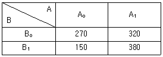
- -90
- -5
- 5
- 90
(정답률: 81%)

2. 동일한 물건을 생산하는 5대의 기계에서 부적함품 여부의 동일성에 관한 실험을 하였다. 적합품이면 0, 부적합품이면 1의 값을 주기로 하고, 5대의 기계에서 각각 200개씩의 제품을 만들어 부적합품을 만들어 부적합품 여부를 실험하여, 다음과 같은 분산분석표의 일부자료를 얻었다. 기계간의 부적합품 여부를 실험하여, 다음과 같은 분산분석표의 일부자료를 얻었다. 기계간의 부적합품률에 서로 차이가 있는지에 관한 가설검정을 실시했을 때 판정기준으로 맞는 것은?(오류 신고가 접수된 문제입니다. 반드시 정답과 해설을 확인하시기 바랍니다.)
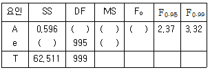
- F0＜F 0.99이므로 1%의 위험률로 기계간의 부적합품률의 차가 있다고 할 수 있다.
- F0>F 0.95이므로 5%의 위험률로 기계간의 부적합품률의 차가 있다고 할 수 없다.
- F0＞F 0.99이므로 1%의 위험률로 기계간의 부적합품률의 차가 있다고 할 수 없다.
- F0＞F 0.95이므로 5%의 위험률로 기계간의 부적합품률의 차가 있다고 할 수 있다.
(정답률: 68%)
3. 품질특성을 3가지 형태로 구분할 때 관련 없는 것은?
- 망소특성
- 망중특성
- 망대특성
- 망목특성
(정답률: 85%)
4. Ls(s7) 직교배열표를 이용하여 관심이 있는 요인효과들의 배치가 표와 같다. 실험번호 3번의 실험조건으로 맞는 것은?
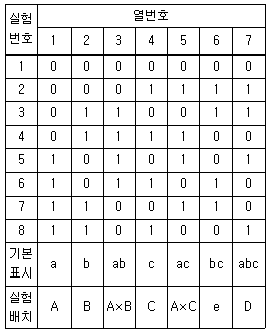
- A0B0C0D1
- A0B1C1D0
- A0B1C0D1
- A1B1C0D1
(정답률: 74%)
5. 모수요인 A, 변량요인 B의 수준수가 각각 l, m이고 반복수가 r회인 2요인실험에서 요인 A의 평균제곱의 기댓값은?
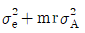
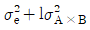
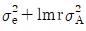
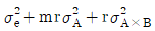
(정답률: 74%)
6. 다음의 1요인 분산분석표에 의하여 구한 검정통계량 F0의 값은 약 얼마인가?
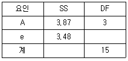
- 4.45
- 5.45
- 6.45
- 7.45
(정답률: 81%)
7. 요인 A의 수준수는 5, 요인 B의 수준수는 4이며, 모든 수준조합에서 3회씩 반복하여 실험하였다. 분산분석 결과로 교호작용은 무시할 수 있었다. 두 요인의 수준조합에서의 분산추정을 위한 유효반복수는 얼마인가? (단, 요인 A와 요인 B는 모수요인이다.)
- 2.5
- 3
- 7.5
- 12
(정답률: 69%)
8. 다음은 1 요인실험에 의해 얻어진 데이터이다. 오차의 제곱함(Se)은 약 얼마인가?
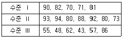
- 120
- 135
- 1254
- 1806
(정답률: 55%)
9. 다음의 두 선형식은 대비의 조건을 만족하고, c1c1'+c2c2'+ㆍㆍㆍ+c1c1'=0이 성립될 때, L1, L2는 서로 무엇을 하고 있다고 할 수 있는가?
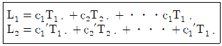
- 직교
- 종속
- 교락
- 교호작용
(정답률: 81%)
10. 두 변수 x, y간에 다음의 데이터가 얻어졌다. 단순 회귀식을 적용할 때, 회귀에 의하여 설명되는 제곱함 SR을 구하면?
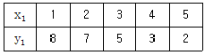
- 0.4
- 0.98
- 25.6
- 26.0
(정답률: 63%)
11. 실험분석결과의 해석과 조치에 대한 설명으로 틀린 것은?
- 실험결과의 해석은 실험에서 주어진 조건 내에서만 결론을 지어야 한다.
- 실험결과로부터 최적조건이 얻어지면 확인실험을 실시할 필요가 없다.
- 취급한 요인에 대한 결론은 그 요인수준의 범위 내에서만 얻어지는 결론이다.
- 실험결과의 해석이 끝나면 작업표준을 개정하는 등 적절한 조치를 취해야 한다.
(정답률: 80%)
12. 교락법에 관한 설명으로 틀린 것은?
- 실험횟수를 늘리지 않는다.
- 실험전체를 몇 개의 블록으로 나누어 배치한다.
- 다른 환경내의 실험횟수는 적게 하도록 고안되었다.
- 실험으로 실험오차를 적게 할 수 있으므로 실험정도가 향상된다.
(정답률: 63%)
13. 요인 수가 3개(A, B, C)인 반복 있는 3요인실험에서 요인의 수준수를 각각 l, m, n이고 반복수가 r이다. A, B요인은 모수이고 C요인이 변량일 때, 평균제곱의 기댓값 E(VA)를 구하는 식으로 맞는 것은?
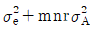
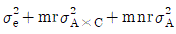
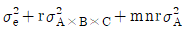
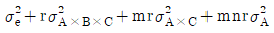
(정답률: 46%)
14. L27(313)의 직교배열표에 있어서 배치된 요인수가 10개일 때, 오차의 자유도는?
- 6
- 8
- 9
- 10
(정답률: 71%)
15. 반복이 없는 2요인실험(모수모형)의 분산분석표에서 ( )에 들어갈 식은?
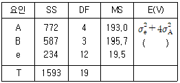
- σe2+2σ2B
- σe2+3σ2B
- σe2+4σ2B
- σ2e+5σ2B
(정답률: 76%)
16. A1 수준에 속해 잇는 B1과 A2 수준에 속해 있는 B1은 동일한 것이 아닌 실험설계법은?
- 난괴법
- 지분실험법
- 교락법
- 라틴방격법
(정답률: 71%)
17. A, B, C 3요인 라틴방격 실험에서 분산분석 후의 추정에 관한 설명 중 맞는 것은?
- u(Ai)의(1-α) 신뢰구간은
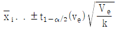
이다. - 3요인 수준조합 Ai ,Bi ,C1에서의 유효반복수(ne )는
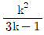
이다. - 분산분석표의 F 검정에서 유의한 요인에 대해서는 각 요인 수준에서 특성치의 모평균을 추정하는 것은 의미가 없다.
- B는 유의하고 A, C는 유의하지 않을 때 Ai, C,의 수준조합에서 (1-α) 신뢰구간은
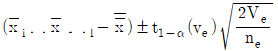
이다.
(정답률: 57%)
18. 일부실시법(fractional factorial design)에 대한 설명으로 틀린 것은?
- 요인의 조합 중 일부만을 실시한다.
- 고차의 교호작용이 존재하면 용이해진다.
- 각 효과의 충정식이 같다면 각 요인은 별명이다.
- 실험의 크기를 될수록 작게 하고자 할 때 사용한다.
(정답률: 79%)
19. 1요인 실험의 분산분석에서 데이터의 구조모형은 xij=μ+ai+eij로 표시될 때, eij(오차)의 가정이 아닌 것은?
- 비정규성: eij~N(μ, σe2)에 따르지 않는다.
- 불편성 : 오차 eij의 기대치는 0이고, 편의는 없다.
- 독립성 : 임의의 eij와 eij(i≠i' 또는 j≠j')는 서로 독립이다.
- 등분산성 : 오차 eij의 분산을 σe2으로 어떤 i, j에 대해서도 일정하다.
(정답률: 67%)
20. 1차 단위가 일원비치인 단일분할법의 특징 중 틀린 것은?
- 2차 단위 요인이 1차 단위 요인보다 더 정도가 좋게 추정된다.
- A, B, 두 인자 중 수준의 변경이 어려운 인자는 1차 단위에 배치한다.
- 1차 단위 오차는 l(m-1)(r-1) 이고, 2차 단위 오차는 (l-1)(r-1)이다.
- 1차 단위 요인과 2차 단위 요인의 교호작용은 2차 단위에 속하는 요인이 된다.
(정답률: 82%)
2과목: 통계적품질관리
21. F분포에 대한 설명으로 틀린 것은?
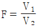
에서 v2가 무한대라면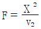
로 된다.- Fα(v1, ∞) 의 값은 X2α의 값을 v1으로 나눈 값과 같다.
- F의 α값이 수치표에 없을 때에는 F의 값을
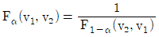
의 관계로부터 해야 한다. - N(μ, α2에서 샘플 2벌을 독립되게 추출했을 때
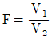
와 같이 표시되는 F분포를 따른다.
(정답률: 62%)
22. 그림은 로트의 평균치를 보증하는 계량규준형 1회 샘플링 검사를 설계하는 과정을 나타낸 것이다. 측성피가 망대특성일 경우 다음 설명 중 틀린 것은?
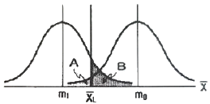
- A는 생산자 위험을 나타낸다.
- B는 소비자 위험을 나타낸다.
- 평균값이 m0인 로트는 좋은 로트로 받아들일 수 있다.
- 시료료부터 얻어진 데이터의 평균이
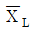
보다 작으면 해당 로트는 합격이다.
(정답률: 75%)
23. A, B 두 개의 천칭으로 같은 물건을 측정하여 얻은 데이터로부터 편차 제곱합을 구하였더니 SA=0.04, SB=0.24로 나타났다. 천칭 A는 5회, 천칭 B는 7회 측정한 결과였다면 유의수준 5%로 두 천칭 A, B간에 정밀도에 차이가 있는가? (단, F0.975(6, 4)=9.20, F0.975(4, 6)=6.23이다.)
- A의 정밀도가 좋다.
- B의 정밀도가 좋다.
- 차이가 있다고 할 수 없다.
- 차이가 있지만 어느 것이 좋은지 알 수 없다.
(정답률: 49%)
24. 계수형 샘플링검사 절차-제2부 : 고립로트 한계품질(LQ) 지표형 샘플링검사 방식(KS Q ISO 2859-2 : 2014)에서 사용되는 한계품질에 대한 설명으로 틀린 것은?
- 로트가 한계품질에서도 합격할 수 있다.
- 한계품질은 생산자 위험을 낮추는 데 중점을 두었다.
- 한계품질은 부적합품 퍼센트로 표시한 품질수준이다.
- 한계품질은 고립 로트에서 합격으로 판정하고 싶지 않은 로트의 부적합품률이다.
(정답률: 60%)
25. 남자 아이와 여자 아이가 태어나는 확률은 같다고 알려졌다. 이를 검정하는 방법으로 틀린 것은?
- 자유도는 전체 조사한 아이들의 수에서 1을 뺀 수이다.
- 태어난 아이들의 성별을 조사하여 적합도 검정을 실시한다.
- 적합도 검정 시 남자와 여자 아이들의 기대도수가 같다.
- 귀무가설은 남자 아이와 여자 아이가 태어날 확률을 각각 0.5로 둔다.
(정답률: 69%)
26. 공정 평균부적합품률 0.⑤, 시료의 크기 200일 때, 3σ 관리한계를 사용하는 p 관리도의 UCL과 LCL을 구한 것으로 맞는 것은?
- UCL=0.0808, LCL=0.0192
- UCL=0.0808, LCL=고려하지 않음
- UCL=0.0962, LCL=0.0038
- UCL=0.0962, LCL=고려하지 않음
(정답률: 67%)
27. 푸아송 분포를 하는 어떤 lot로부터 30개의 시료를 추출하여 조사하였더니, 부적합품률은 5%임이 밝혀졌다. 합격판정개수가 2개일 때 이 lot가 합격할 확률은 약 얼마인가?
- 0.586
- 0.746
- 0.809
- 0.938
(정답률: 61%)
28. 공정평균이 10이고, 모표준편차가 1인 공정을
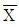
관리도로 평균치 변화를 관리할 때, 검출력이 가장 크게 나타나는 경우는?- 공정평균의 변화는 크고, 시료의 크기는 작은 경우
- 공정평균의 변환는 크고, 시료의 크기도 큰 경우
- 공정평균의 변화는 작고, 시료의 크기도 작은 경우
- 공정평균의 변화는 작고, 시료의 크기는 큰 경우
(정답률: 59%)
29. 다음 20개의 데이터(data)의 중위수(median)는 얼마인가?
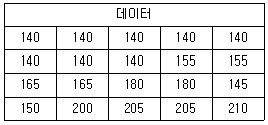
- 152.5
- 155
- 160
- 161.75
(정답률: 67%)
30. 부적합률에 대한 계량형 축차 샘플링검사 방식(표준편차 기지)(KS Q ISO 8423 : 2008)에서 양쪽 규격한계의 결합관리의 경우 상한 합격판정치 AU를 구하는 식은?
- goncum+hAσ
- goncum-hAσ
- (U-L-go)ncum+hAσ
- (U-L-go)ncum-hAσ
(정답률: 61%)
31. 모주적합수 m=25인 공정에 대해 작업방법을 변경한 후에 확인해 보니 표본부적합수 c=20으로 나타났다. 모부적합수가 달라졌다고 할 수 있는지에 대한 판정으로 맞는 것은? (단, 유의수준 α=0.⑤이다.)
- u0=-5으로 H0 기각, 모부적합수가 달라졌다고 할 수 있다.
- u0=-4.8으로 H0 기각, 모부적합수가 달라졌다고 할 수 있다.
- u0=-1.12으로 H0 채택, 모부적합수가 달라졌다고 할 수 없다.
- u0=-1.0으로 H0 채택, 모부적합수가 달라졌다고 할 수 없다.
(정답률: 57%)
32. 어떤 상관표로부터 계산한 결과가
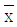
=4.855,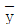
=63.55, Sxx=92.9095, Sxy=651.695이었을 때, x를 독립변수로 하는 회귀직선식은?- y=29.50+0.143x
- y=29.50+7.014x
- y=34.17+0.143x
- y=34.17+7.014x
(정답률: 58%)
33. 새로운 작업방법으로 시험제작한 화학약품의 성분 함유량의 모평균이 기준으로 설정된 값과 같은지의 여부를 검정하고자할 때 검정통계량의 식으로 맞는 것은? (단, 모표준편차는 모른다고 가정한다.)
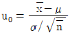
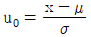
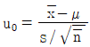
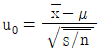
(정답률: 59%)
34. 오차에 관한 설명으로 틀린 것은?
- 측정값들의 산포의 크기가 정밀도이다.
- 측정값의 σ값이 작을수록 측정값의 정밀도는 나빠진다.
- 측정오차는 측정계기의 부정확, 측정자의 기술부족 등에서 오는 오차이다.
- 샘플링 오차는 시료를 랜덤하게 샘플링하지 못함으로써 발생되는 오차이다.
(정답률: 62%)
35.
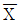
-R 관리도에서 관기계수(Cf)가 1.3이었다면, 이 공정에 대한 판정으로 맞는 것은?- 급간변동이 크다.
- 군구분이 나쁘다.
- 공정상태를 알 수 없다.
- 대체로 관리상태로 볼 수 있다.
(정답률: 58%)
36. 기대치와 분산의 계산식 중 틀린 것은? (단, X, Y는 서로 독립이다.)
- Cov(X, Y)=0
- E(X, Y)=E(X)ㆍE(Y)
- V(X)=σ2=E(X2)-μ
- V(X±Y)=V(X)+V(Y)
(정답률: 60%)
37. 다음 자료로서 X관리도의 UCL을 구하면? (단, 합리적인 군으로 나눌 수 있는 경우이다.)
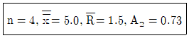
- 5.⑤
- 6.10
- 6.46
- 7.19
(정답률: 47%)
38. 검사단위의 품질표시방법으로 맞는 것은?
- 특성치에 의한 표시방법
- 샘플링검사에 의한 표시방법
- 검사성적서에 의한 표시방법
- 엄격도검사에 의한 표시방법
(정답률: 48%)
39. 좋은 관리도로서 가져야 할 조건으로 가장 타당한 것은?
- σ수준이 높은 관리도
- 공정이 이상상태임을 자주 신호해주는 관리도
- 관리상한(UCL)과 관리하한(LCL)의 간격이 좁은 관리도
- 공정이 이상상태로 전환되면 이를 빨리 탐지하면서 오경보(false alarm)가 작은 관리도
(정답률: 63%)
40. 어떤 정규모집단으로부터 n=9의 랜덤샘플을 추출,
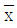
를 구하여 H0:μ=58, H0:μ≠58의 가설을 1%의 유의수준으로 검정하려고 한다. 만일 σ=6이라면 채택역은? (단, u0.975=1.96, u0.995=2.576, t0.975(8)=2.306, t0.995(8)=3.355이다.)- 51.300＜
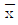
＜64.700 - 52.848＜
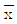
＜63.152 - 53.388＜
 ＜62.612
＜62.612 - 54.080＜
 ＜61.920
＜61.920
(정답률: 71%)
3과목: 생산시스템
41. MRP 시스템의 투입자료가 아닌 것은?
- 자재명세서(bill of materials)
- 제품설계도(product drawing)
- 재고기록파일(inventory record file)
- 대일정계획(master production schedule)
(정답률: 73%)
42. 포드(Ford) 시스템의 생산표준화 대상에 해당하지 않는 것은?
- 제품의 단순화
- 부품의 표준화
- 작업자의 단순화
- 기계 및 공구의 전문화
(정답률: 63%)
43. 생산시스템의 운영 시 수행목표가 되는 4가지에 해당하지 않는 것은?
- 재고
- 품질
- 원가
- 유연성
(정답률: 54%)
44. 다음에서 설비효율을 저해하는 7대 손실에 해당하는 것을 모두 고른다면?
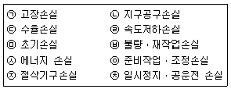
- ㉣, ㉤, ㉥, ㉦, ㉧, ㉨, ㉩
- ㉠, ㉡, ㉣, ㉤, ㉥, ㉨, ㉩
- ㉠, ㉢, ㉣, ㉤, ㉥, ㉧, ㉨
- ㉠, ㉣, ㉤, ㉥, ㉧, ㉨, ㉩
(정답률: 66%)
45. 구매업무의 성과를 평가하기 위한 객관적인 척도에 해당하지 않는 것은?
- 예산 절감액
- 거래업체의 수
- 납기준수 실적
- 구매물품의 품질수준
(정답률: 76%)
46. 불확실성하의 의사결정기법에 대한 설명으로 틀린 것은?
- 기대화폐가치(EMV)기준은 낙관계수를 사용한다.
- 최소성과최대화(Maximin) 기준은 비관주의적 기준이다.
- 라플라스(Laplace)기준은 동일확률기준 이라고도 한다.
- 최대후회최소화(Minimax regret)기준은 기회손실의 최대값이 최소화되는 대안을 선택한다.
(정답률: 58%)
47. 워크샘플링 기법을 이용하여 표준시간을 결정하기 적합한 작업유형으로 맞는 것은?
- 주기가 짧고 반복적인 작업
- 주기가 짧고 비반복적인 작업
- 주기가 길고 비반복적인 작업
- 작업 공정과 시간이 고정된 작업
(정답률: 56%)
48. JIT 시스템과 MRP 시스템을 비교 설명한 것 중 틀린 것은?
- JIT 시스템은 재고를 부채로 인식하지만, MRP 시스템은 재고를 자산으로 인식한다.
- JIT 시스템은 납품업자를 동반자 관계로 보지만, MRP 시스템은 이해관계에 의한다.
- JIT 시스템은에서 작업자 관리는 지시, 명령에 의하지만, MRP 시스템은 의견일치 등의 합의제에 의해 관리한다.
- JIT 시스템은 최소량의 로트 크기를 추구하지만, MRP 시스템은 생산준비비용과 재고유지빋용의 균형점에서 로트의 크기를 결정한다.
(정답률: 68%)
49. 4가지 주문작업을 1대의 기계에서 처리하고자 한다. 최소납기일 규칙에 의해 작업순서를 결정할 경우 최대납기지연시간은 얼마가 되는가? (단, 오늘은 4월 1일 아침이다.)
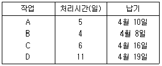
- 5일
- 6일
- 7일
- 8일
(정답률: 60%)
50. 총괄생산계획(APP) 수립에 사용되는 기법이 아닌 것은?
- 도시법(Graph)
- 선형결정기법(LDR)
- 탐색결정기법(SDR)
- 라인밸런싱기법(LOB)
(정답률: 75%)
51. Line 생산시스템의 균형효율(Balance Rfficirncy)에 관한 산출식으로 틀린 것은? (단, N:작업장 수, C:사이클 타임, ∑ti:작업장별 표준시간합계, I=유휴시간)
- 권형효율=
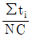
- 불균형효율=
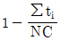
- 균형효율=
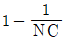
- 유휴시간= 1-(NC-∑ti)
(정답률: 45%)
52. 길브레스(Gilbreth) 부부의 업적에 해당하지 않는 것은?
- 가치분석
- 필름분석
- 동작분석
- 서블릭기호
(정답률: 66%)
53. 다중활동분석표(Multiple Activity Chart)를 사용하는 경우에 해당하지 않는 것은?
- 복수의 작업자가 조작업을 할 경우
- 한 명의 작업자가 1대 또는 2대 이상의 기계를 조작할 경우
- 복수의 작업자가 1대 또는 2대 이상의 기계를 조작할 경우
- 사이클(cycle) 시간이 길고 비 반복적인 작업을 개인이 수행하는 경우
(정답률: 72%)
54. 설비보전 중 지역보전의 단점이 아닌 것은?
- 실제적인 전문가를 채용하는 것이 어렵다.
- 작업 의뢰에서 완성까지 시간이 많이 소요된다.
- 지역별로 보전 요원을 여분으로 배치하는 경향이 있다.
- 배치전환, 교용, 초과 근로에 대하여 인간 문제나 제약이 많다.
(정답률: 53%)
55. 원자재를 가공하여 제품을 생산하는 제조공장을 대상으로 수행하는 방법연구에서 작업구분이 큰 것부터 순서대로 나열한 것은?
- 공정-단위작업-요소작업-동작요소
- 공정-단위작업-동작요소-요소작업
- 공정-요소작업-단위작업-동작요소
- 공정-요소작업-동작요소-단위작업
(정답률: 59%)
56. 다품종소량생산 환경에서 수요나 공정의 변화에 대응하기 쉽도록 주로 범용설비를 이용하여 구성하는 배치형태는?
- 공정별배치
- Line 배치
- 제품별배치
- 고정위치배치
(정답률: 72%)
57. 간트 차트가 지니고 있는 결점이 아닌 것은?
- 상황이 변동될 때 일정을 수정하기 어렵다.
- 작업의 성과를 작업장별로 파악하기 어렵다.
- 문제점을 파악하여 사전에 중점관리할 수 없다.
- 프로젝트 규모가 크고 작업활동이 복잡한 경우에는 적합하지 않다.
(정답률: 52%)
58. 어떤 제품의 판매가격은 1000원, 생산량이 20000개이다. 이 제품의 고정비는 1200000원, 변동비는 4000000원일 때, 이 제품의 손익분기점 매출액은 얼마인가?
- 1000000원
- 1500000원
- 2000000원
- 2500000원
(정답률: 55%)
59. 수요예측방법 중 n기간 단순이동평균법에 대한 설명으로 틀린 것은?
- 극단적인 실적값이 미치는 영향이 크다.
- n은 증가시키면 변동을 잘 평활할 수 있다.
- 평균치를 사용하므로 추세를 반영할 수 없다.
- 최적 n을 수리적 모형으로 결정하기 용이하다.
(정답률: 36%)
60. 구매전략 중 중앙(또는 집중)구매의 특징에 해당하지 않는 것은?
- 구매업무의 리드타임이 길어질 수 있다.
- 구매력 증진에 의한 경비절감이 가능하다.
- 소량의 품목을 긴급 구매하는데 유리하다.
- 구매업무의 전문화로 효율적 구매가 가능하다.
(정답률: 71%)
4과목: 신뢰성관리
61. Y 제품에 수명시험 결과 얻은 데이터를 와이블 확률지를 사용하여 모수를 추정하였더니 형상모수 m=1.0, 척도모수 η=3500시간, 위치모수 r=0이 되었다. 이 제품의 MTBF는 얼마인가? (단, Γ(1.5)=0.88623, Γ(2)=1.00000, Γ(2.5)=1.32934이다.)
- 22⑤시간
- 3102시간
- 3500시간
- 4653시간
(정답률: 61%)
62. 개량 1회 샘플링 검사(DOD-HDBK H108)에서 샘플수와 총시험시간이 주어지고, 총시험시간까지 시험하여 발생한 고장계수가 합격판정계수보다 적을 경우 로트를 합격하는 시험방법은?
- 현지시험
- 정수중단시험
- 강제열화시험
- 정시중단시험
(정답률: 68%)
63. 신뢰도가 R인 부품 3개가 병렬결합모델로 설계되어 있을 때, 시스템 신뢰도의 표현으로 맞는 것은?
- 3R
- 3R-3R2+R3
- (1-R)3
- {1-(1-R)2}+R
(정답률: 66%)
64. 그림은 고장율의 변화를 나타내는 욕조곡선(bath-tub curve)이다. 각 고장기간을 맞게 나타낸 것은?
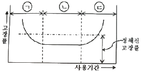
- ㉠:초기고장기간, ㉡:마모고장기간, ㉢:우발고장기간
- ㉠:우발고장기간, ㉡:초기고장기간, ㉢:마모고장기간
- ㉠:초기고장기간, ㉡:우발고장기간, ㉢:마모고장기간
- ㉠:마모고장기간, ㉡:초기고장기간, ㉢:우발고장기간
(정답률: 72%)
65. 제조공정에 있는 한 기계의 가동시간과 고장 수리시간을 조사하였더니 표와 같았다. 데이터로부터 이 기계의 가용도를 구하면 약 몇 %인가?
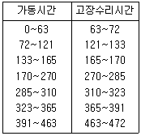
- 12.7
- 54.7
- 81.1
- 92.8
(정답률: 61%)
66. n개은 아이템을 수명시험하여 데이터를 크기 순서대로 t1, ㆍㆍㆍ, tn으로 얻었다. 고장포함수 F(t)의 추정을 평균순위법으로 한다면, 이 아이템이 tr(1≤r≤n)이상 고장이 없을 신뢰도는 얼마로 추정할 수 있는가?
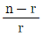
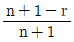
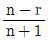
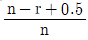
(정답률: 57%)
67. 수명분포가 지수분포인 부품 n개의 고장시간이 각각 Xn, ㆍㆍㆍ, Cn일 때, 고장률 λ에 대한 추정치λ는?
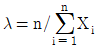
(정답률: 44%)
68. 와이블(Weibull) 분포에 대한 설명으로 틀린 것은?
- 형상모수에 따라 다양한 고장특성을 갖는다.
- 고장률
- 비기억(memoryless) 특성을 가지므로 사용이 편리하다.
- 증가, 감소, 일정한 형태의 고장률을 모두 표현할 수 있다.
(정답률: 62%)
69. 우선적 AND 게이트가 있는 고장목(Fault Tree)에 관한 설명으로 가장 적절한 것은?
- 입력사상 A, B, C가 모두 발생될 때 정상사상이 발생된다.
- 입력사상 A, B, C가 모두 발생하고 입력사상 A가 B와 C보다 우선적으로 발생될 때 정상사상이 발생된다.
- 입력사상 A, B, C가 모두 발생하고 입력사상 A가 B보다 우선적으로 발생될 때 정상사상이 발생된다.
- 3개의 입력사상 A, B, C 중 2개의 입력사상 A와 B만 발생하고 A가 B보다 우선적으로 발생될 때 정상사상이 발생된다.
(정답률: 65%)
70. 그림과 같은 시스템의 신뢰도는 약 얼마인가? (단, A와 B는 신뢰도는 각각 0.9와 0.8이다.)
- 0.8624
- 0.8839
- 0.9027
- 0.9907
(정답률: 62%)
71. 그림과 같이 4개의 부품의 직렬구조로 연결되어 있는 시스템의 신뢰도는? (단, 각 부품의 신뢰도는 R1, R2, R3, R4이다.)
- R1R2R3R4
- 1-R1R2R3R4
- (1-R1)(1-R2)(1-R3)(1-R1)
- 1-(1-R1)(1-R2)(1-R3)(1-R1)
(정답률: 70%)
72. 시험분석 및 시정조치(TAAF) 프로그램에 의하여 설계 및 제조상의 결함을 발견하고, 이를 시정조치함으로써 시간이 지남에 따라 신뢰성 척도가 점진직으로 향상되는 과정에 대한 시험을 무엇이라 하는가?
- 신뢰성 성장시험
- 신뢰성 인증시험
- 생산 신뢰성 수락시험
- 환경 스트레스 스크리닝 시험
(정답률: 67%)
73. 체계 전체의 설계 목표치를 설정함과 동시에 하위 체계에 대하여 각각 신뢰성 목표치를 배분하는 신뢰성 배분의 일반적인 방침과 가장 거리가 먼 것은?
- 기술적으로 복잡한 구성품에 대해서는 낮은 목표치를 배분한다.
- 원리적으로 단순한 구성품에 대해서는 높은 목표치를 배분한다.
- 사용경헝이 많은 구성품에 대해서는 높은 목표치를 배분한다.
- 고성능을 요구하는 구성품에 대해서는 높은 목표치를 배분한다.
(정답률: 56%)
74. 일반적인 FMEA 분해레벨의 배열 순서로 맞는 것은?
- 서브시스템→시스템→컴포넌트→부품
- 시스템→서브시스템→부품→컴포넌트
- 시스템→컴포넌트→부품→서브시스템
- 시스템→서브시스템→컴포넌트→부품
(정답률: 58%)
75. 어떤 재려의 강도는 평균 40kg/mm2이고, 표준편차가 4kg/mm2인 정규분포를 따른다. 이 재료에 걸리는 부하는 평균이 25kg/mm2이고, 표준편차가 3kg/mm2이다. 이때 재료가 파괴 될 확률은 약 얼마인가? (단, P(u＞2)=0.02275, P(u＞3)=0.00135이다.)
- 0.00135
- 0.02275
- 0.99725
- 0.99865
(정답률: 61%)
76. 온도에 의한 기속수명시험에서 고장의 가속의 모형화하는 데 가장 널리 사용되는 수명-스트레스 관계식 모형은?
- 피로모형
- 아레니우스모형
- 거듭제곱모형
- 마이그레이션모형
(정답률: 66%)
77. 기계 C의 평균고장률이 0.001/시간인 지수분포를 따를 경우, 100시간 사용하였을 때 신뢰도는 약 얼마인가?
- 0.9048
- 0.9231
- 0.9418
- 0.9512
(정답률: 63%)
78. Y 수리계 시스템을 총 50시간 동안(수리시간 포함) 연속 사용한 경우 5회의 고장이 발생하였고 각각의 수리시간이 0.5, 0.5, 1.0, 1.5, 1.5시간 이었다면 MTBF는 얼마인가?
- 5시간
- 9시간
- 14시간
- 40시간
(정답률: 51%)
79. 제품의 설계단계에서 고유신뢰성을 증대시킬 수 있는 방법은?
- 공정의 자동화
- 품질의 통계적 관리
- 부품과 제품의 burn-in
- 병렬 및 대기 리던던시 활용
(정답률: 53%)
80. 시료 n개를 샘플링하여 미리 정해진 시험 중단 시간인 t0시간까지 시험하고, t0시간이 되면 시험을 중단하는 정시중단시험에서 평균수명을 구하는 식은? (단, 고장이 발생하여도 교체하지 않는 경우이며, r은 고장 계수이다.)
(정답률: 54%)
5과목: 품질경영
81. 품질경영의 성숙과정(quality management maturity grid)을 5단계로 나누어 품질코스트 프로그램의 추진단계를 기술한 것 중 단계별 내용이 틀린 것은?
- 제1단계인 수동적 관리에서는 품질관리가 전혀 실시되지 않고 있는 수준이다.
- 제2단계인 품질경영 정착에서는 품질경영이 기업시스템의 필수기능이 되는 간계이다.
- 제3단계인 공정관리에서는 공정품질의 개선을 통하여 품질이 안정되어 품질경영이 점차 제도화되는 단계이다.
- 제4단계인 예방적 관리에서는 전사적인 품질경영의 필요성이 인식되고 품질경영에서 최고경영자와 구성원의 역할이 강조되는 단계이다.
(정답률: 50%)
82. 허쯔버그(Herzberg)의 동기요인-위생요인 이론에서 동기(만족)요인에 해당하지 않는 것은?
- 인정
- 자기실현
- 성취감
- 승진, 지위
(정답률: 64%)
83. 기업에서 제안활동이 종업원의 참여의식을 높일 수 있는 유효한 방법임은 분명하지만 활성화되지 않는 경우가 있는데, 그 이유가 아닌 것은?
- 최고경영자의 지원과 관심이 부족함
- 심사지연이나 비합리적인 평가제도를 운영함
- 교육이나 홍보의 미비로 인한 종업원의 관심부족
- 종업원 개인들 간의 업무수행능력 차이와 자부심 결여
(정답률: 56%)
84. Y 품질 특성값의 규격은 50~60으로 규정되어 있다. 평균값이 55, 표준편차가 1인 공정의 시그마(σ)의 수준은 어느 정도인가?
- 2 시그마 수준
- 3 시그마 수준
- 4 시그마 수준
- 5 시그마 수준
(정답률: 60%)
85. 버어만(L.C Verman)이 제시한 표준화 공간에서 표준화의 구조 중 국면(aspect)에 해당되지 않는 것은?
- 시방
- 공업기술
- 등급 부여
- 품종의 제한
(정답률: 50%)
86. 품질에 대해서 사용자의 만족감을 표현하는 주관적 측면과 요구조건과의 일치성을 표현하는 객관측 측면을 함께 고려한 품질의 이원적 인식방법에 관한 설명으로 틀린 것은?
- 역품질요소 : 품질에 대해 충족되는 충족되지 않든 만족도 불만도 없음
- 일원적 품질요소 : 품질에 대해 충족이 되면 만족 충족되지 않으면 불만
- 매력적 품질요소 : 품질에 대해 충족이 되면 만족을 주지만 충족되지 않더라도 무방
- 당연적 품질요소 : 품질에 대해 충족이 되면 당연하게 여기고 충족되지 않으면 불만
(정답률: 66%)
87. 고객만족영영을 성공적으로 추진하기 위해 고려해야 할 사항으로 보기 어려운 것은?
- 전사적이고 총체적으로 기업의 모든 부문이 참여해야 한다.
- 벤치마킹한 고객만족경영의 절차와 방법을 그대로 적용한다.
- 최고경영자를 비롯한 구성원 전체의 의식변화가 필요하다.
- 고객의 욕구, 기대는 성장 및 변화하므로 고객만족노력을 수시로 점검하고 반성하여 발전시키는 자세로 추진해야 한다.
(정답률: 68%)
88. 품질코스트의 한 요소인 실패코스트와 적합비용과의 관계에 관한 설명으로 맞는 것은?
- 적합비용과 실패코스트는 전혀 무관하다.
- 적합비용이 증가되면 실패코스트는 줄어든다.
- 적합비용이 증가되면 실패코스트는 더욱 높아진다.
- 실패코스트는 총 품질코스트 중 극히 일부에 불과하므로 적합비용에 미치는 영향이 매우 적다.
(정답률: 67%)
89. 제조공정에 관한 사내표준화의 요건을 설명한 것으로 적당하지 않은 것은?
- 실행가능성이 있는 것일 것
- 내용이 구체적이고 객관적일 것
- 내용이 신기술이나 특수한 것일 것
- 이해관계자들의 합의에 의해 결정되어야 할 것
(정답률: 67%)
90. 측정오차 중 가장 큰 영향을 미치는 요인은?
- 측정기 자체에 의한 오차
- 외부적인 영향에 의한 오차
- 측정하는 사람에 의한 오차
- 계측방법의 차이에 의한 오차
(정답률: 45%)
91. 과거의 제조중심 품질관리(Quality Control) 활동과 현재의 기업단위 활동의 품질경영(Quality Management)에 대한 설명으로 틀린 것은?
- 과거의 품질관리는 고객만족과 경제적 생산을 강조한다면, 현대의 품질경영은 요구충족을 강조한다.
- 과거 품질관리는 생산중심으로 관리기법을 강조하고, 현재의 품질경영은 고객지향의 기업문화와 조직 행동적 사고와 실천을 강조한다.
- 과거의 품질관리는 제품 요건 충족을 위한 운영기법 및 전사적 활동이고, 현재의 품질경영은 최고경영자의 품질방침에 따른 고객만족을 위한 전사적 활동이다.
- 과거의 품질관리는 제품의 부적합품 감소를 위해 품질표준을 설정하고 적합성을 추구하며, 현재의 품질경영은 총체적 품질향상을 통해 경영목표를 달성한다.
(정답률: 54%)
92. 품질관리 부서가 해야 하는 업무로 타당하지 않는 것은?
- 공정모니터링
- 품질정보의 제공
- 품질관련 훈련 및 교육실시
- 품질계획 및 보증체계 구축
(정답률: 57%)
93. 공정의 산포가 규격의 최대치와 최소치와의 차보다 클 때, 조처하는 방법으로 틀린 것은?
- 규격을 좁힌다.
- 실험을 계획하여 공정의 산포를 감소시킨다.
- 문제가 해결될 때까지 전 제품에 대해서 전수검사를 실시한다.
- 적합한 공구 사용, 작업방법, 관리방법 등 기본적 공정의 개선을 꾀한다.
(정답률: 57%)
94. 품질관리의 기능은 4개의 기능으로 대별하여 사이클을 형성한다. 품질관리의 기능에 포함되지 않는 것은?
- 품질의 보증
- 품질의 설계
- 품질의 관리
- 공정의 관리
(정답률: 43%)
95. 포터(M.E. Porter)는 품질에 관한 경쟁전략에 대해 기본적 접근방법으로 3가지 항목을 제시하였다. 3가지 항목에 해당하지 않는 것은?
- 차별화
- 집중화
- 소형화
- 원가상의 우위확보
(정답률: 56%)
96. 국가규격에 해당하지 않는 것은?
- BS
- NF
- IEC
- ANSI
(정답률: 64%)
97. 다음은 신 QC 7가지 도구 중 어느 것을 설명한 것인가?
- 계통도법
- 친화도법
- 연관도법
- 매트릭스도법
(정답률: 46%)
98. 품질경영시스템-기본사항과 용어(KS Q ISO 9000:2015)에 기술된 품질경영원칙에 해당하지 않는 것은?
- 성과증시
- 인원의 적극참여
- 증가기반 의사결정
- 프로세스 접근법
(정답률: 59%)
99. n=5 -R관리도에서 =0.790, =0.008을 얻었다. 규격이 0.785~0.795인 경우의 공정능력비(process capability tatio)는 약 얼마인가? (단, n=5일 때, d2=2.326이다.)
- 0.003
- 0.484
- 1.064
- 2.064
(정답률: 30%)
100. 설계결함에 의한 제품책임 문제를 사전에 예방하기 위한 개발ㆍ설계부문의 예방활동으로 볼 수 없는 것은?
- 신뢰성 및 안정성에 대한 확인시험을 실시한다.
- 기획ㆍ조사단계에서 표적이 되는 제품의 안정성에 대해서 조사한다.
- 공급물품의 지속적인 품질유지 및 향상을 위해 기술지도와 관리점검을 강화한다.
- 중요 구성품에 대해서 신뢰성 예측, 고장해석 등을 제품 라이프 사이클의 입방에서 검토한다.
(정답률: 49%)